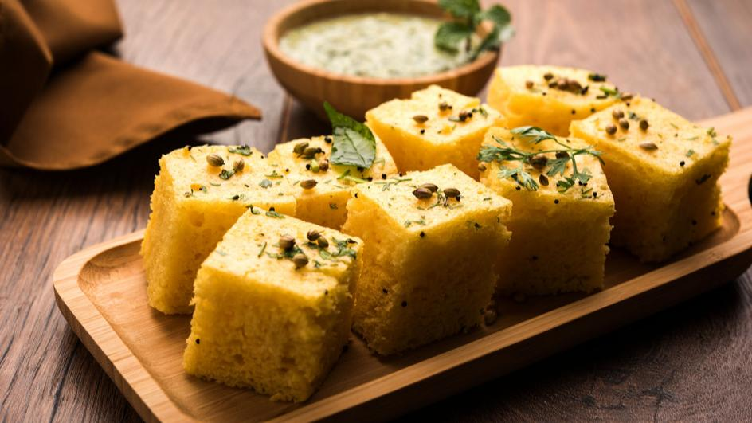

Authentic Khaman Dhokla Recipe: A Delight of Gujarati Cuisine

Description
Dive into the flavours of Gujarat with our authentic Khaman Dhokla recipe. A symbol of Gujarati cuisine and a healthy Indian street food option.
Ingredients
For Dhokla Batter
- 1 cup Gram flour (Besan)
- 1 tablespoon Lemon juice
- 1 teaspoon Green chilli-ginger paste
- 1/2 teaspoon Turmeric powder
- 1/2 teaspoon Eno fruit salt
- Salt to taste
For Tempering
- 1 tablespoon Vegetable oil
- 1/2 teaspoon Mustard seeds
- 10-12 Curry leaves
- 1-2 Green chillies, slit
- 2 tablespoons Sugar
- 1/2 cup Water
For Garnishing
- Fresh coriander leaves, chopped
- Grated coconut
Steps
Preparing the Dhokla Batter
- In a large bowl, combine gram flour, lemon juice, green chilli-ginger paste, turmeric powder, and salt. Gradually add water to make a smooth batter. Let it rest for 10-15 minutes.
- After resting, add the Eno fruit salt to the batter and stir gently. You will see the batter become frothy.
- Pour the batter into a greased thali or dish and steam for 10-12 minutes until it’s firm to touch.
Preparing the Tempering
- In a small pan, heat the vegetable oil and add mustard seeds. When they begin to splutter, add the curry leaves and green chillies.
- Add sugar and water to the pan and bring it to a boil. Cook until the sugar is completely dissolved.
- Pour this tempering over the steamed dhokla.
Garnishing the Dhokla
- Finally, garnish the Khaman Dhokla with chopped coriander leaves and grated coconut. Serve with green chutney or tamarind chutney.